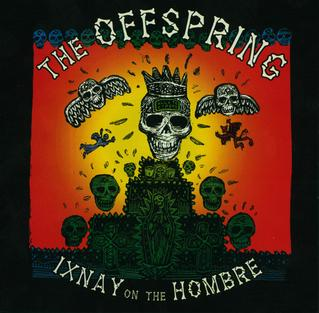

Ixnay on the Hombre
Publicado por Arthur Baldner em

Ixnay on the Hombre foi lançado em 4 de fevereiro de 1997 pela gravadora Columbia Records.
Lista de músicas:
- Disclaimer -
Letras
- The Meaning of Life -
Letras
- Mota -
Letras
- Me & My Old Lady -
Letras
- Cool to Hate -
Letras
- Leave It Behind -
Letras
- Gone Away -
Letras
- I Choose -
Letras
- Intermission -
Letras
- All I Want -
Letras
- Way Down the Line -
Letras
- Don't Pick It Up -
Letras
- Amazed -
Letras
- Change the World -
Letras